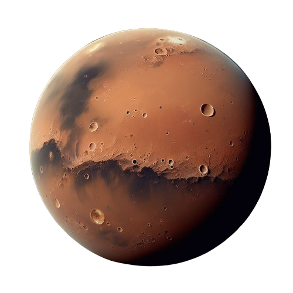

PLANETA MARTE
Marte é o quarto planeta do Sistema Solar, localizado após a Terra. É conhecido como o "Planeta Vermelho" devido à presença de óxido de ferro em sua superfície, que confere a cor característica. Marte possui uma atmosfera fina composta principalmente de dióxido de carbono.
